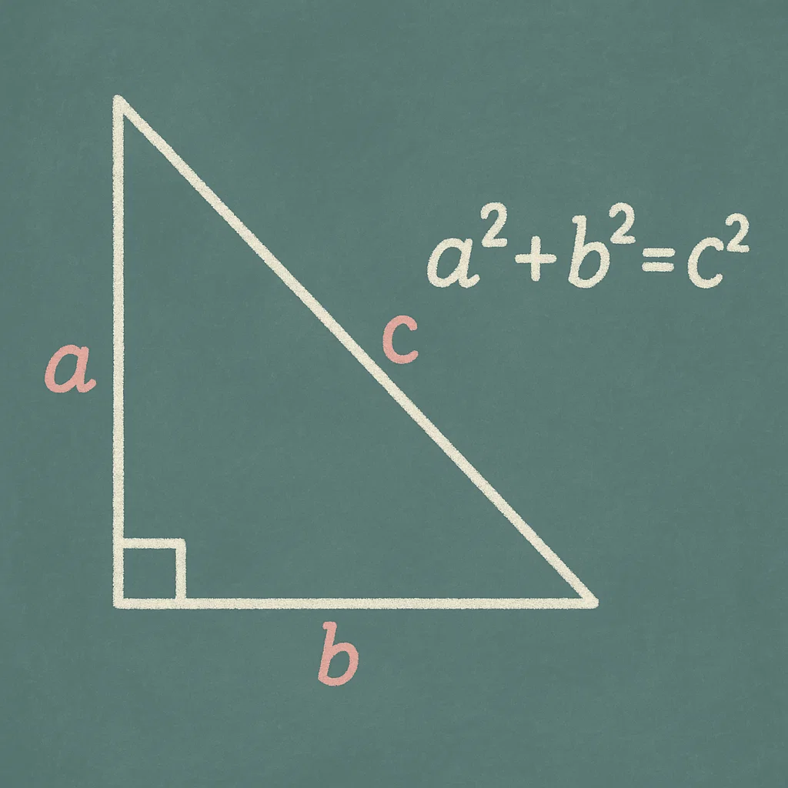

💡 Taleem.Help
What Are Rational and Irrational Numbers?
Rational Numbers
A rational number is any number that can be written as a fraction:
\[ \frac{a}{b} \], where \( a \) and \( b \) are integers and \( b \neq 0 \).
This includes whole numbers, negative numbers, fractions, and decimals that either terminate or repeat.
Examples: \( \frac{2}{3}, -5, 0.75, 0.333\ldots \)

Irrational Numbers
An irrational number cannot be written as a simple fraction. Its decimal form goes on forever without repeating.
Examples: \( \pi, \sqrt{2}, e \)

Key Difference: Decimal Behavior
- Terminating decimal: ends after a few digits (e.g., \( 0.5 \))
- Repeating decimal: has a repeating pattern (e.g., \( 0.666\ldots \))
- Non-terminating, non-repeating: no pattern, goes on forever (e.g., \( \pi \))
Comparison Table
| Property | Rational Numbers | Irrational Numbers |
|---|
| Can be written as \( \frac{a}{b} \) | Yes | No |
| Decimal Terminates? | Yes or Repeating | No |
| Examples | \( \frac{1}{2}, 0.25, 7 \) | \( \pi, \sqrt{2}, e \) |
Rational Expressions
A rational expression is like a rational number—but made with algebra.
It’s any expression of the form:
\[ \frac{P(x)}{Q(x)} \], where \( P(x) \) and \( Q(x) \) are polynomials and \( Q(x) \neq 0 \).
Example:
\[ \frac{x^2 + 2x + 1}{x - 3} \]
They behave like rational numbers in that they can be simplified, added, subtracted, multiplied, or divided—just with variables.